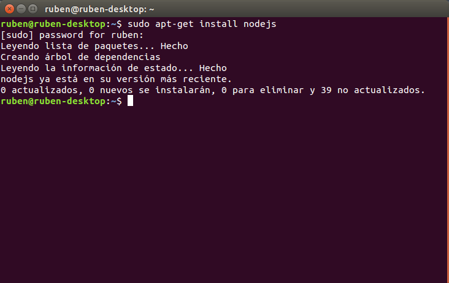
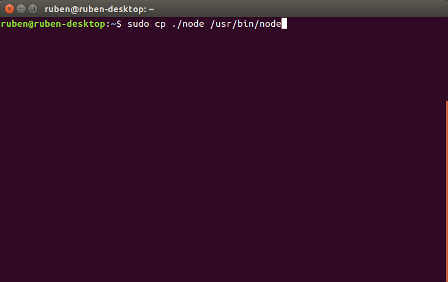

Node.js
NodeJS es un entorno en tiempo de ejecución con arquitectura orientada a eventos que actúa del lado del servidor. Es de código abierto y está basado en el motor V8 de Google.
Instalación de NodeJS en Ubuntu:
Para la instalación de NodeJS en ubunto existen dos métodos:
- Consola de comandos:

Este método es muy sencillo y rápido de realizar, pero en cambio instala una versión obsoleta de NodeJS.
- Descarga:
Para la descarga de NodeJS debemos dirigirnos a la página https://nodejs.org y descargar una de las versiones existentes.

Al descomprimir el paquete descargado ya podemos hacer uso del node, aunque debemos dirigirnos a la carpeta /bin para poder ejecutarlo. Copiando el el archivo ejecutable Node a la carpeta usr/bin del sistema podemos hacer usuo del comando node desde cualquier parte del sistema.

Al instalar NodeJS se nos instala también el gestor de paquetes NPM (node package manager). Este gestor de paquetes nos permite instarlar software adicional para uso de NodeJS.